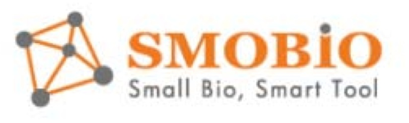

Le aziende che rappresentiamo
Come lavoriamo con i produttori
CABRU seleziona produttori specializzati e ne porta i prodotti sul mercato italiano. Non un semplice punto vendita, ma un referente che parla la lingua del laboratorio e quella del fornitore, verifica la disponibilità e segue l'ordine dalla richiesta alla consegna.
I produttori per area di prodotto
- Anticorpi: ExBio, ReliaTech, IMMBIOMED, Affinity Biologicals, BioMedica Diagnostics, Cayman Chemical, BioVendor, FineTest. - Kit ELISA: BioVendor, FineTest, LDN, Affinity Biologicals, DIA.PRO, Cayman Chemical. - Proteine: ReliaTech, Enzyme Research Laboratories, BioVendor, FineTest, SEQENS. - Acidi nucleici: A&A Biotechnology, Bioatlas, Rovalab, MAGBIO, SMOBIO. - Elettroforesi e western blot: DGel Sciences, G Biosciences, SMOBIO. - Molecole biochimiche: Cayman Chemical, G Biosciences. - Terreni per microbiologia: Condalab. - Soluzioni e polveri: Candor Bioscience, SEQENS, G Biosciences.
Il produttore o il prodotto cercato non è presente?
Per una verifica è sufficiente contattare CABRU: la disponibilità viene controllata presso i produttori rappresentati e il cliente è assistito dalla richiesta alla consegna, con un unico referente.